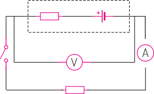

Exercise 2.1
1.
A student measures the voltage of a cell in two scenarios.
In scenario 1, he connects the voltmeter directly to the cell and records a value of 1.5 V.
In scenario 2, he adds an unknown resistor to the circuit and records a voltage of 1.32 V.
2.
The following results were obtained in an experiment to determine the value of resistance.
| Voltage (mV) | 0.04 | 0.08 | 0.2 | 0.21 | 0.22 |
|---|---|---|---|---|---|
| Current (mA) | 5.5 | 10.5 | 20.3 | 28.9 | 30 |
From the experimental results, using ICT tools or otherwise:
3.
Study Figure 2.23 and the given instructions to answer the questions that follow.

Figure 2.23
| Switch condition | Ammeter reading (mA) | Voltmeter reading (V) |
|---|---|---|
| Open | 0 | 9 |
| Closed | 250 | 7 |
4.
A student sets up the schematic diagram as in Figure 2.24 to investigate the internal resistance of a cell where is a fixed resistor, is the internal resistance of the cell, A is an ammeter and V is a voltmeter across the cell.
When the switch is closed, the ammeter reads 0.4 A, the voltmeter reads 1.2 V.
If the emf, of the cell is known to be 1.6 V: